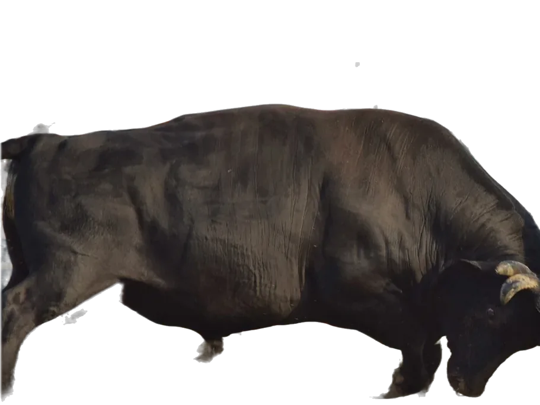
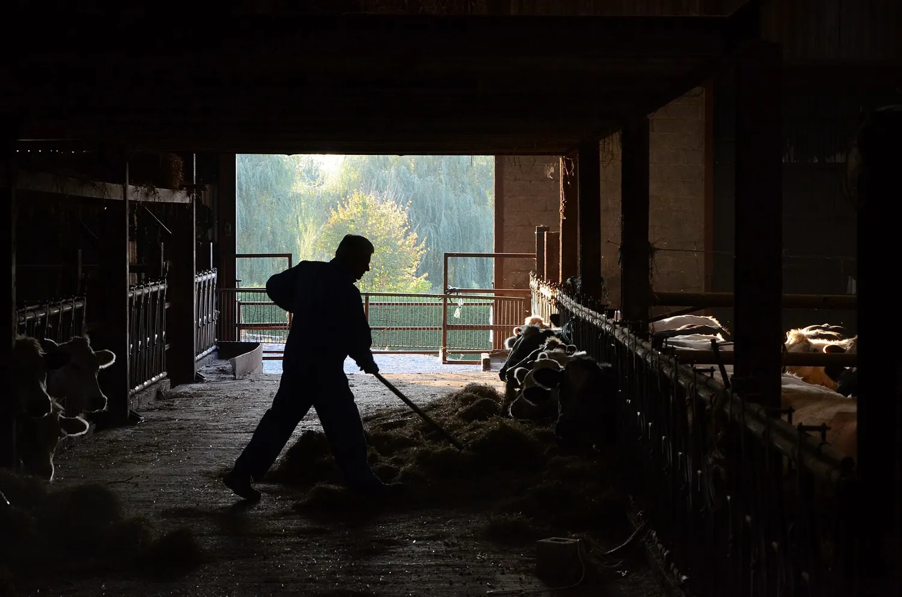
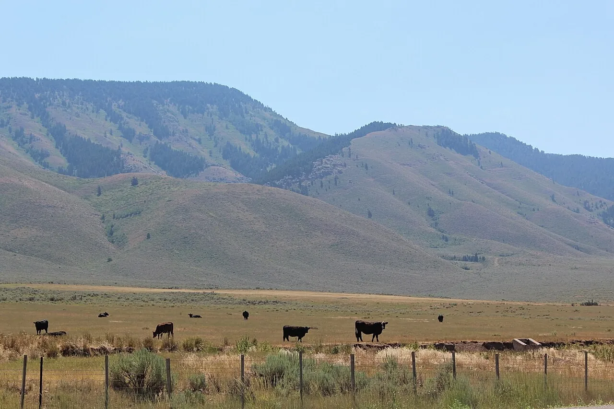
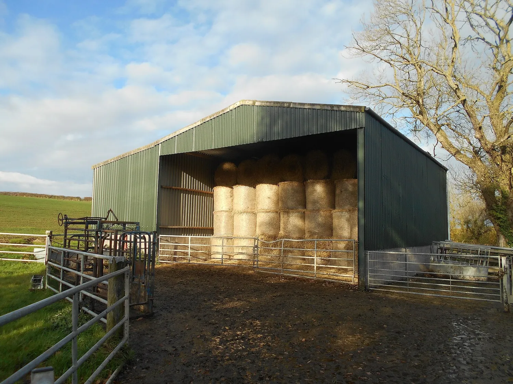
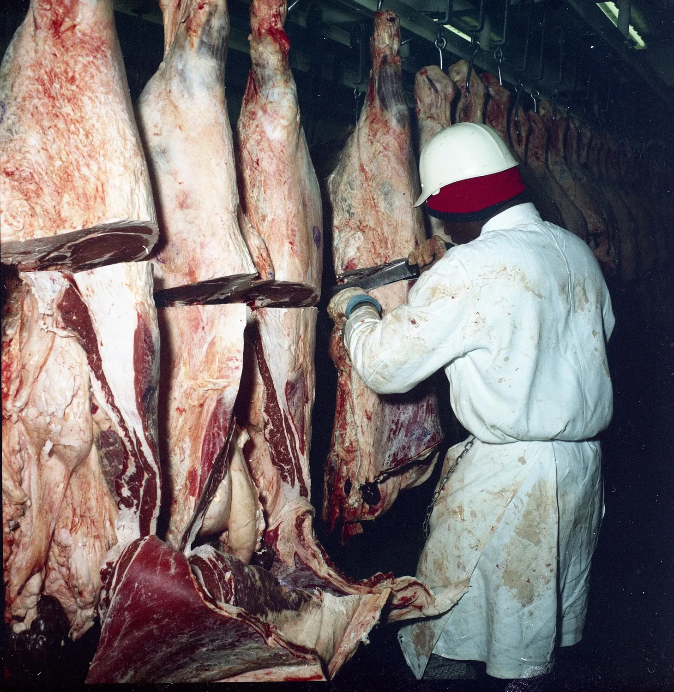
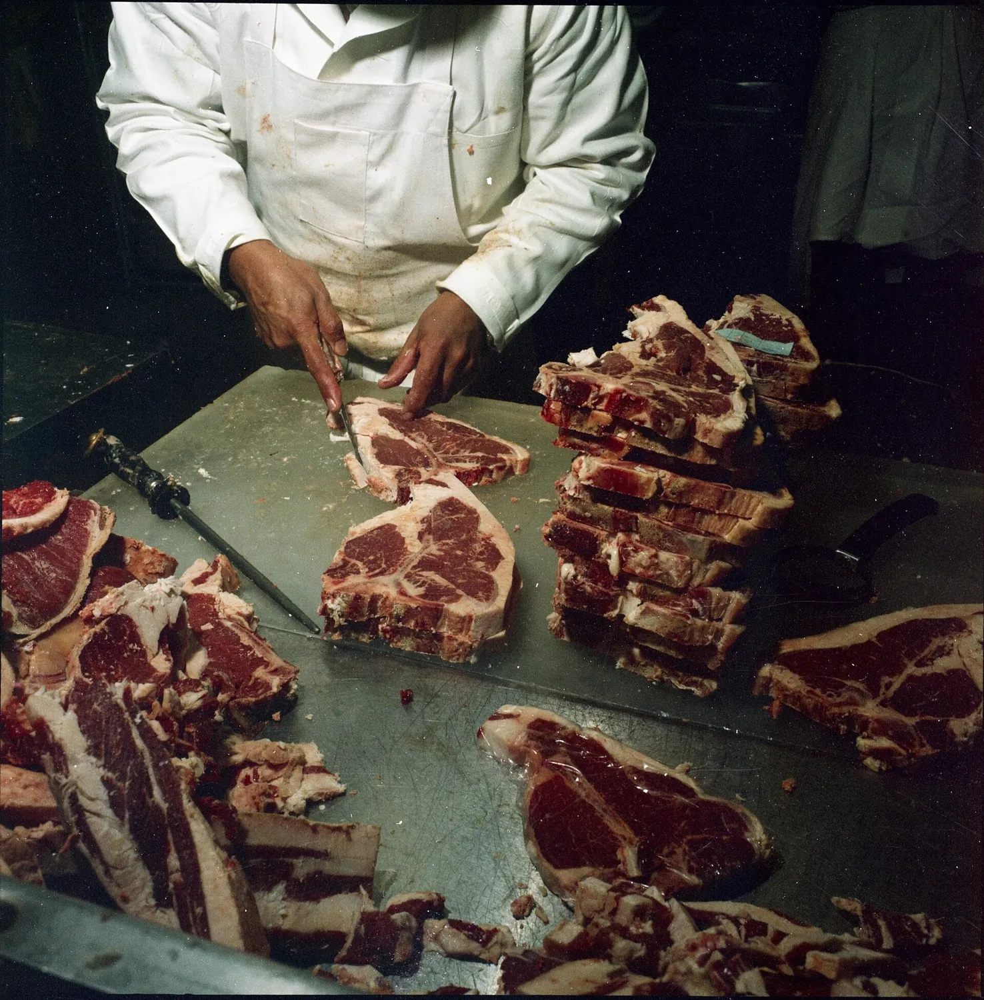
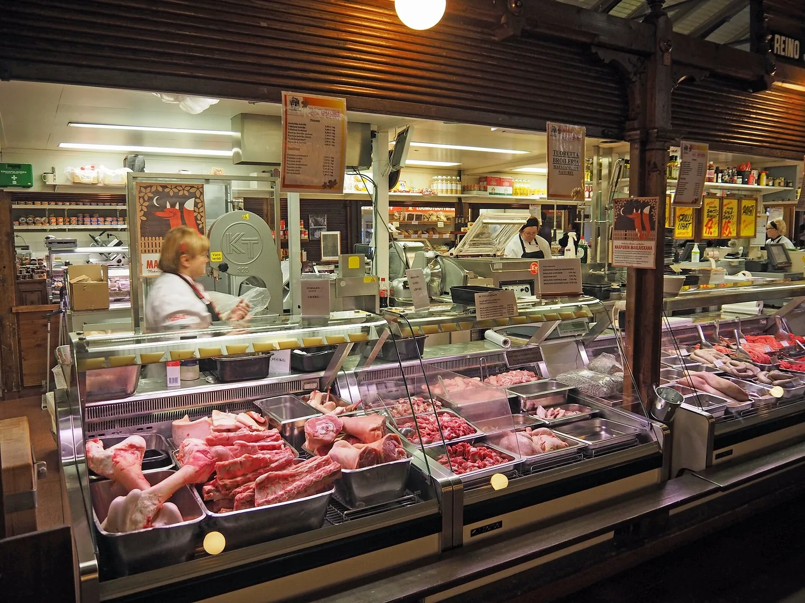

MesaraFetahović
Kvalitet na jednom mestu.
Junad iz našeg tova, klanje u našoj klanici, rasecanje i prodaja u našoj radnji. Domaće meso iz Prijepolja, bez uvoza i bez posrednika.
- 01Sopstveni tovJunad odrastaju na našoj farmi, na senu i žitu sa naših njiva.
- 02Sopstvena klanicaKlanje i hlađenje u registrovanom objektu, pod veterinarskom kontrolom.
- 03Sopstvena radnjaSa farme pravo na pult. Znamo poreklo svakog komada koji prodamo.
Naša priča
Domaće meso, ne iz uvoza.
Na pultu većine radnji danas stoji meso za koje niko ne zna odakle je stiglo, koliko je putovalo i koliko je puta bilo zamrznuto. Kod nas je drugačije.
Svako grlo koje prodamo odgajili smo sami, na našim prostorima, na domaćoj hrani. Sami ga koljemo, sami ga rasecamo i sami vam ga pružamo preko pulta. Zato možemo da garantujemo kvalitet, a vi tačno znate šta jedete.
- Bez uvoznog mesa
- Bez smrzavanja
- Bez posrednika
- Poreklo svakog komada

Od farme do pulta
Pet koraka. Sve naše ruke.
Kvalitet mesa se ne pravi u radnji. Pravi se mesecima ranije, na farmi. Ovako izgleda put svakog komada.

FarmaTov na pašnjaku
Junad odrastaju na otvorenom, bez žurbe. Sporiji rast znači čvršće meso i bolji ukus.

ŠtalaDomaća hrana
Seno, kukuruz i žitarice sa naših njiva. Znamo šta je svako grlo jelo.

KlanicaKlanje i hlađenje
Registrovan objekat, veterinarski pregled i hladni lanac od prvog minuta.

RasecanjeMajstorski rez
Meso odstoji i zri, pa ga rasecamo ručno, komad po komad, po vašoj meri.

RadnjaNa vašem stolu
Sveže na pultu svakog jutra. Pitajte nas za savet, rado ćemo vam preporučiti komad.

Ne prodajemo meso iz uvoza. Prodajemo ono što smo sami odgajili.Porodica Fetahović
Ponuda
Iz naše radnje.
Sveže meso, roštilj iz sopstvene proizvodnje i suhomesnato iz naše pušnice. Kliknite na proizvod za detalje.
Cene su sa PDV-om, po kilogramu. Meso po porudžbini pripremamo i pakujemo za preuzimanje u radnji.
Galerija
Pogledajte kako radimo.
Farma, klanica, pušnica i radnja. Bez filtera i bez kataloških fotografija.
Saveti iz mesare
Znanje sa pulta.
Posetite nas
Radnja u Prijepolju.
Naručite telefonom, Viberom ili WhatsApp-om, a mi ćemo vam meso iseći i spakovati da vas čeka. Za veće porudžbine (slave, svadbe, roštilj za društvo) javite se dan-dva ranije.
- Telefon
- +381 60 000 0000 (Viber, WhatsApp)
- Adresa
- Prijepolje, Srbija
- Pon – Pet
- 07:00 – 20:00
- Subota
- 07:00 – 18:00
- Nedelja
- 07:00 – 13:00
- @mesarafetahovic